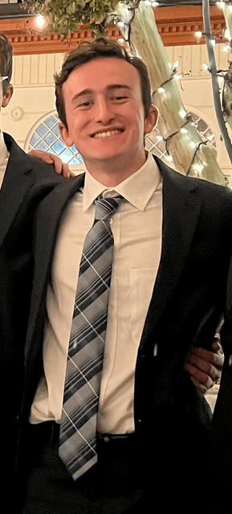
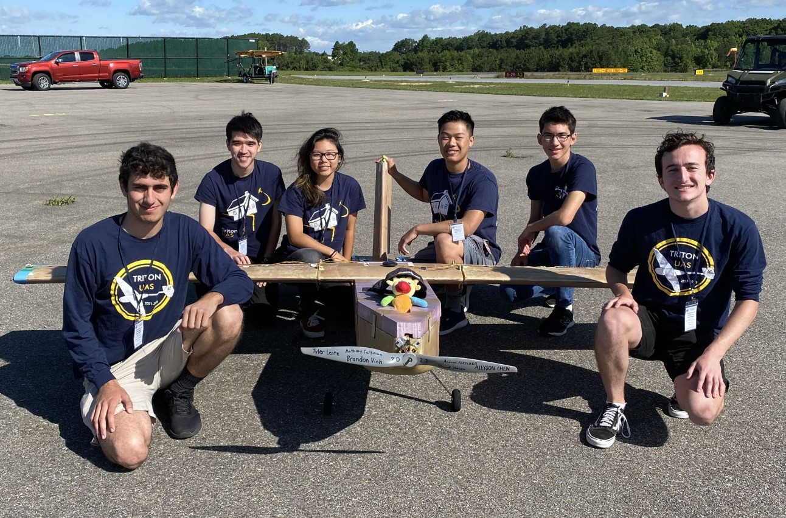

General
Hi, I'm Tyler Lentz. I grew up in Santa Clarita, California and am currently in my third year of studying Computer Science at UCSD.
I am interested in all things Fantasy and Sci-fi, and especially books. I enjoy programming, and especially frontend design. I also really enjoy lower level systems languages like C and Rust.
I am currently one of two Software Leads for the club Triton UAS at UCSD. To learn more about what we do, please visit our website.
To keep reading, you can either scroll down or press the "Down" arrow key.
Academics
I graduated from Saugus High School in the year 2020. From there I went to UCSD where I currently am in my third year and am expected to graduate in June of 2024. Some of my favorite classes I've taken at UCSD include:
- CSE 120: Operating Systems, taught by Professor Joseph Pasquale.
- CSE 131: Compiler Construction, taught by Professor Joe Politz.
- CSE 134B: Web Client Languages, taught by Professor Thomas Powell.
- CSE 150B: AI: Search and Reasoning, taught by Professor Sicun Gao.
Favorites
I have many other kinds of favorites as well, so here is a selection of my favorite favorites:
Favorite Book Series:
- The Wheel of Time
- The Expanse
- Realm of the Elderlings